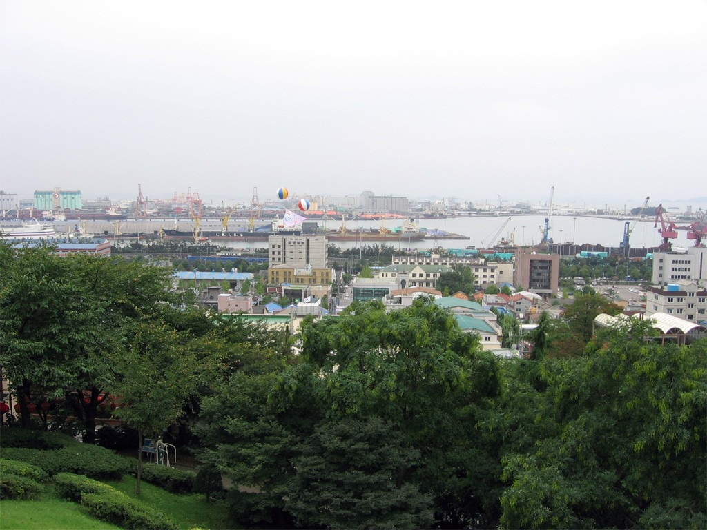
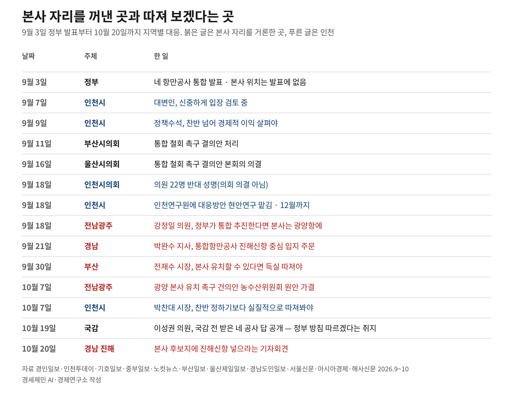
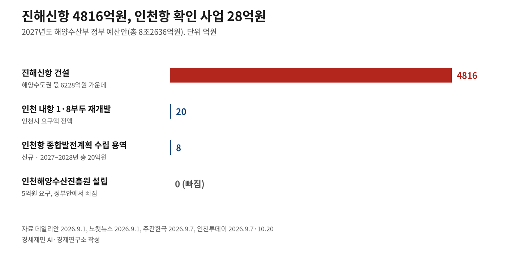
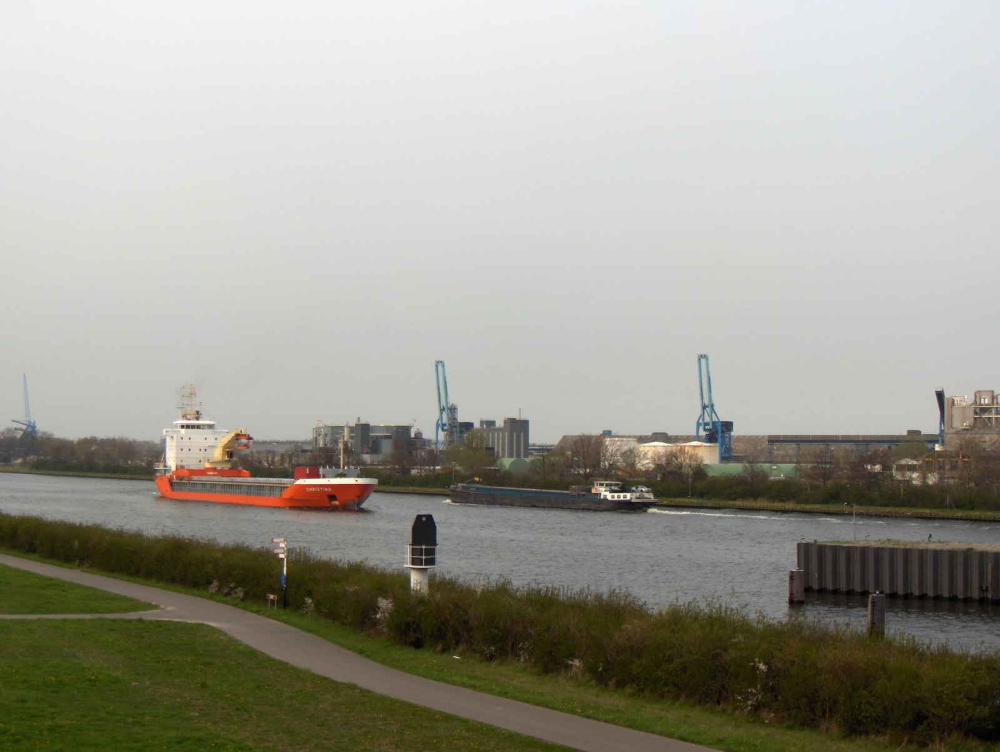

[인천해양주권⑭] 항만공사 통합에 기업청산만 바라보는 인천
진해·광양은 본사 유치 나서…인천시는 '실익부터'
네 공사는 '정부 방침대로'…농해수위엔 인천 지역구 의원 0명
AI경세제민=김갑봉 기자 | 2026년 10월 19일 국회 농림축산식품해양수산위원회(농해수위)가 항만공사 넷을 감사했다. 이성권 국민의힘 의원(부산 사하갑)은 국정감사(국감)를 앞두고 네 공사에 물었다. 통합을 어떻게 보느냐는 질문이다. 네 곳 모두 정부 결정과 방침을 따르겠다는 취지로 답했다.
이튿날 경남 창원시청에서는 한국항만공사 본사 후보지에 진해신항을 넣으라는 기자회견이 열렸다. 9월 3일 정부 발표 뒤 47일 동안 네 공사와 인천, 다른 세 항만 지역이 한 일을 짚는다. 인천항 현안과 법 조항, 해외 사례도 함께 본다.
네 공사의 같은 답, '정부 방침대로'
이날 감사는 서울 여의도 국회에서 열렸다. 인천·부산·울산·여수광양 항만공사 넷이 함께 감사를 받았다.
정부가 네 항만공사를 가칭 '한국항만공사'로 묶겠다고 발표한 뒤 항만공사가 처음 받는 국감이다.
김선교 국민의힘 의원(경기 여주·양평)도 국감 전에 네 공사 의견을 받아 공개했다. 여수광양항만공사는 전담팀(TF)에서 정부와 함께 통합 로드맵을 마련해 나가겠다고 했다. 로드맵은 언제 무엇을 할지 적은 일정표다. 부산항만공사는 로드맵을 세울 때 의견을 내겠다고 했다.
인천항만공사는 정부와 항만업계, 지역사회와 충분히 소통하겠다는 취지로 답했다. 울산항만공사는 긴밀히 소통하고 합리적인 대응 방안을 찾겠다고 했다. 김선교 의원실이 공개한 네 공사 답에 '반대'라는 말은 없다.
김 의원은 국감장에서 공사들이 원론적인 답변만 한다고 했다. 이성권 의원은 사장들이 개인적으로 자신에게는 다 반대 의견을 말했다고 했다. 그는 통합 뒤 경쟁력이 떨어지면 기관장도 책임에서 자유로울 수 없다고 했다.
이 의원은 옌스 마이어(Jens Meier) 국제항만협회(IAPH) 총재의 말도 꺼냈다. 마이어 총재는 앞서 9월 15일 부산국제항만컨퍼런스 기자회견에 나왔다. 그는 부산항은 컨테이너, 울산항은 에너지가 주력이라 완전히 다르다고 했다. 항만을 한 바구니에 담고 경쟁을 피하면 미래에 위험이 될 수 있다고도 했다.
신장식 조국혁신당 의원(비례대표)은 사장들이 정부에 좀 더 적극적으로 말할 필요가 있다고 했다.
변재영 울산항만공사 사장은 해양수산부에 사의를 냈다. 이 사실은 국감 닷새 전인 14일 알려졌다. 이경규 인천항만공사 사장은 2023년 5월 취임했고 임기는 올해 5월 중순 끝났다. 인천항만공사는 8월 3일 사장 공모를 냈다.
농해수위 위원 가운데 인천 지역구 의원은 한 명도 없다. 12일 해양수산부 감사와 19일 항만공사 감사 보도에서 인천 지역구 의원이 질의했다는 내용은 찾을 수 없다.

본사 자리, 진해와 광양은 손들었다
9월 3일 발표에는 한국항만공사 본사 위치가 없다. 발표대로면 네 공사는 지역지사가 된다. 이준석 개혁신당 의원(경기 화성을)은 10월 6일 국감에서 본사를 물었다. 국회 재정경제기획위원회(재경위) 감사 자리다. 통합하면 본사가 무조건 부산으로 가느냐는 질의였다.
이형일 부총리 겸 재정경제부 장관은 해양수산부 중심의 통합법인설립추진단에서 로드맵을 만든다고 답했다.
박완수 경남도지사는 9월 21일 실국본부장 회의에서 통합에는 신중한 검토가 필요하다고 했다. 그러면서 통합이 이뤄지면 통합항만공사가 진해신항을 중심으로 입지할 수 있게 하자고 했다. 정부와 정치권에 이 의견을 적극 전하자는 주문이다.
10월 20일에는 창원시청 프레스센터에서 진해구 전직 주민자치위원장 협의회(회장 최치광)가 회견을 열었다. 협의회는 본사 후보지에 진해신항을 정식으로 넣으라고 요구했다. 입지 평가 기준과 배점을 공개하라는 요구도 냈다.
TEU는 20피트 컨테이너 한 개를 세는 단위다. 진해신항은 3만TEU급 배를 댈 수 있는 항만으로 짓는다. 총사업비는 14조6000억원이다. 배 한 척을 대는 자리를 선석이라 한다. 2040년까지 21선석을 짓고 2029년에 3선석을 먼저 연다.
2027년도 해양수산부 예산안에서 해양수도권 육성 관련 주요 사업은 6228억원이다. 이 가운데 4816억원이 진해신항 건설비다. 해양수도권은 해양수산부가 부산·울산·경남을 세계적 해양경제 거점으로 키우겠다는 계획에 붙인 이름이다.
전남광주통합특별시의회 강정일 의원(더불어민주당·광양2)은 9월 18일 5분 자유발언에 나섰다. 그는 통합에 반대하면서도 정부가 통합을 추진한다면 본사를 광양항에 두라고 했다.
강 의원은 10월 1일 통합 강행 때 광양 본사 유치를 촉구하는 건의안을 동료 의원들과 함께 대표발의했다. 시의회 농수산위원회가 10월 7일 원안대로 가결했다.
전재수 부산시장은 9월 30일 부산 발전 여·야·정 회의에서 본사를 말했다. 그는 통합본사를 부산으로 유치할 수 있다면 득실을 꼼꼼히 따져봐야 한다고 했다.
9월 3일부터 10월 20일까지 보도 가운데 인천시나 인천 정치권이 본사를 인천에 두라고 요구한 기사는 없다.

인천시 47일, '검토'와 '실익'
박록삼 인천시 대변인은 9월 7일 신중하게 입장을 검토하고 있다고 했다. 9일에는 송현석 인천시 정책수석이 찬반을 넘어 경제적 이익이 무엇인지 살펴봐야 한다고 했다.
국민의힘 인천시당은 이튿날인 10일 논평을 냈다. 시가 분명한 반대는커녕 실익을 살펴봐야 한다며 머뭇거린다는 비판이다.
시는 9월 18일 인천연구원에 통합 대응 방안 현안연구를 맡겼다. 현안연구는 지금 걸린 문제를 짧은 기간에 따져 보는 연구다. 시는 12월까지 연구 결과를 정리하고, 2027년 초 정부 로드맵이 나오면 이를 바탕으로 의견을 내겠다고 했다. 남재헌 해양수산부 차관은 올해 연말까지 통합 초안을 어느 정도 만들겠다고 했다.
박찬대 인천시장은 10월 7일 민선 9기 출범 100일을 맞아 언론과 대화하는 자리를 열었다. 그는 찬반을 정하기보다 실질적으로 따져봐야 한다고 했다.
인천시 누리집 보도자료 게시판에서 '항만공사'로 본문을 검색하면 9월 3일부터 10월 20일까지 5건이 나온다. 통합을 다룬 글은 없다.
부산시의회는 9월 11일 통합 철회 촉구 결의안을 처리했다. 울산시의회는 16일 본회의에서 철회 촉구 결의안을 의결했다. 인천시의회에서는 18일 의원 22명이 시의회 본관 앞에서 반대 성명을 냈다. 의회 의결을 거친 결의안은 아니다.
중부일보는 10월 11일 인천 지역구 국회의원 14명의 입장을 정리했다. 앞서 입장을 밝힌 5명을 빼고 9명에게 물었다. 14명 가운데 반대는 6명, 유보는 2명이다. 나머지 6명은 답하지 않았다.
배준영 국민의힘 의원(인천 중구·강화·옹진)은 10월 6일 재경위 국감에서 질의했다. 그는 인천에서 기관 여덟이 통폐합되면서 지역 생태계가 초토화될 위기라고 했다.
인천항발전협의회와 인천평화복지연대 등 16개 단체는 9월 3일 공동성명을 냈다. 9월 7일에는 인천항발전협의회와 인천경실련 등이 인천시청에서 회견을 열었다. 이들 단체는 10월 13일 광양시청 기자회견에도 다른 세 항만 지역 단체와 함께 섰다.
인천항만공사 노동조합이 통합 발표 무렵 실시한 찬반투표에서는 투표자의 96.35%가 통합에 반대했다(9월 3일 보도).
배후단지 26만㎡ 공실, 임대료는 위원회
19일 국감에서 인천항만공사는 인천항 현안으로도 질의를 받았다. 배후단지는 부두 뒤에 물류창고와 공장을 들이는 땅이다.
송옥주 더불어민주당 의원(경기 화성갑)은 인천신항 배후단지와 아암물류2단지 입주율이 67%라고 했다. 두 단지에서 26만㎡가 5년째 비어 있다. 축구장 36개 남짓한 넓이다. 송 의원은 현행 임대료로 계산하면 약 65억원의 임대수익을 놓쳤다고 했다.
송 의원은 부산·울산 배후단지에는 100% 입주한 곳도 있다고 했다. 그는 입주 업종을 넓히고 초기 임대료를 낮추는 방안을 검토하라고 했다. 이경규 사장은 해양수산부 등과 특화구역 변경 방안을 검토하겠다고 답했다. 특화구역은 들어올 업종을 정해 둔 구역이다.
임대료 기준을 정하는 곳은 인천항만공사 항만위원회다.
항만공사법 제10조 제6호가 항만시설 임대료·사용료 기준을 위원회 의결 사항으로 둔다. 인천시장이 추천한 위원도 이 위원회에 앉는다.
조승환 국민의힘 의원(부산 중·영도)은 인천신항 1-2단계 자동화부두 장비를 물었다. 2028년 문을 열 예정인 이 부두의 크레인 37기는 모두 중국산이다. 운영사 선정 때 국산 장비 가점은 3점이었다.
정일영 더불어민주당 의원(인천 연수을)이 해양수산부에서 받아 7월 공개한 자료가 있다. 2025년 인천항 항만 재정투자는 2021년보다 65.4% 줄었다. 같은 기간 부산항은 83.6% 늘었다.
2027년도 해양수산부 예산안 총액은 8조2636억원이다. 해양수산부가 9월 1일 낸 보도자료에 이름이 나오는 항만은 동해신항·새만금신항·군장항·대산항·부산 감만부두·묵호항 등이다.
보도자료 본문에 인천이라는 지명은 나오지 않는다.
보도로 확인되는 인천항 몫은 둘이다. 내항 1·8부두 재개발 20억원과 인천항 종합발전계획 수립 용역 8억원이다. 인천해양수산진흥원 설립비로 인천시가 요구한 5억원은 정부안에 들지 못했다.

항만공사법 제6조, 지자체도 출자 가능
항만공사법 제6조는 출자를 다룬다. 국가 또는 지방자치단체는 공사 사업에 필요한 동산과 부동산, 항만시설관리권을 공사에 출자할 수 있다. 동산은 옮길 수 있는 재산, 부동산은 땅과 건물이다. 항만시설관리권은 항만시설을 관리하며 사용료를 받는 권리다.
인천항만공사 지분은 재정경제부가 59.51%, 해양수산부가 21.16%, 한국해양진흥공사가 12.69%를 갖는다. 산업은행과 수출입은행이 3.32%씩이다. 인천시 몫은 없다.
제4조는 공사를 항만별로 세우게 한다. 다만 효율을 위해 필요하면 이웃한(인접한) 항만 둘 이상을 공사 하나가 맡게 하는 예외를 둔다. 시행령 제1조의2는 부산항·인천항·울산항에 공사를 하나씩 두게 한다. 여수항과 광양항은 이 예외에 따라 공사 하나가 맡는다.
정부 발표대로면 인천항·부산항·울산항·여수항·광양항, 무역항 다섯을 한 공사가 맡는다.
인천시 민선 8기(2022~2026년, 유정복 시장) 공약 이행 문서가 있다. 이름은 '항만자치권 확보'다. 인천항만공사를 지방공기업으로 바꾸는 안과 항만공사법 개정 건의를 담았다.
박 시장은 통합 발표 한 달 반 전인 7월 16일 인천지역 언론사 합동 인터뷰에서 항만공사 권한의 지방 이양을 검토하자고 했다.
경기신문은 10월 18일 인천 지역사회 요구를 전했다. 지방정부 지분 참여와 지역 추천 항만위원 확대다. 지역 정가 관계자는 통합하더라도 항만별 독립채산제를 보장해 각 항만 수익을 그 지역에 재투자하게 해야 한다고 했다. 독립채산제는 항만별로 수입과 지출을 따로 셈하는 제도다.
아돌프 응(Adolf Ng)과 아타나시오스 팔리스(Athanasios Pallis)는 2010년 논문을 냈다. 실린 곳은 『환경과 계획 A(Environment and Planning A)』다. 부산과 로테르담, 피레우스의 항만 개혁을 견준 논문이다.
두 사람은 부산 개혁에 중앙이 강하게 이끄는 한국식 개발국가 전통이 배어 있다고 본다. 부산항만공사 집행부를 감사하는 권한과 사장을 임명·해임하는 권한은 대통령에게 있었다고 쓴다.
그러면서 부산항만공사 설립으로 항만 문제에 부산시 참여가 늘었다고 적는다. 참여는 주로 3년 동안 이익에 붙는 세금을 면제해 주는 재정 지원이었다고 덧붙인다.
노스시포트 주주 여덟, 국가는 없다
네덜란드 젤란트항만공사(Zeeland Seaports)와 벨기에 헨트(Gent)항은 2018년 1월 1일 하나가 됐다. 새 이름은 노스시포트(North Sea Port)다. 국경을 넘어 합친 항만공사다.
주주는 지방정부 여덟이고 국가는 주주 명단에 없다.
헨트시가 48.52%, 젤란트주가 25%를 갖는다. 네덜란드 쪽 기초자치단체 셋(보르셀러·테르뇌전·플리싱언)은 8.33%씩이다. 동플랑드르주와 작은 두 기초자치단체가 나머지를 나눠 갖는다.

덴마크 코펜하겐항과 스웨덴 말뫼항은 2001년 코펜하겐말뫼항(Copenhagen Malmö Port·CMP)을 세웠다. 지분은 코펜하겐 도시·항만개발공사(By & Havn)가 50%, 말뫼시가 45.9%, 민간 주주가 4.1%다. By & Havn은 코펜하겐시가 95%, 덴마크 정부가 5%를 갖는다.
이탈리아는 2016년 항만청 24곳을 항만시스템청 15곳으로 묶었다. 항만시스템청은 이웃한 항만 여럿을 함께 맡는 기관이다. 개혁을 앞둔 2015년 국제교통포럼(ITF) 토론보고서는 작은 항만의 지역사회가 통제권을 잃을까 두려워한다고 적는다.
프랑스는 2004년 8월 13일 법으로 국가가 직접 관리하던 비자치 항만을 늦어도 2007년 1월 1일까지 지방에 넘기게 했다. 프랑스 정부는 2005년 하원 서면답변에서 본토에서 넘길 항만을 17곳으로 적었다.
이유현·서인석·정수현의 2019년 『지방행정연구』 논문은 프랑스 항만법전을 분석했다. 이 논문은 이 법이 분권화를 정한 국가 소유 항만을 14곳으로 적는다. 저자들은 항만분권을 하려면 지방자치법과 항만 관계 법령을 함께 고쳐야 한다고 쓴다.
인천시는 12월까지 현안연구 결과를 정리할 계획이다. 해양수산부는 2027년 1월까지 로드맵과 법령 개정안을 마련할 계획이다. 농해수위 해양수산부 종합감사는 10월 23일이다.
참고문헌
- 이유현·서인석·정수현, 「항만분권의 핵심의제는 무엇인가?: 프랑스 항만법전에 대한 시맨틱 네트워크 분석을 중심으로」, 『지방행정연구』 제33권 제3호(통권 118호), 한국지방행정연구원, 2019.9, 51~88쪽. https://krila.re.kr/download/review/619
- Ferrari, C., Tei, A., Merk, O., 「The Governance and Regulation of Ports: The Case of Italy」, ITF Discussion Paper 2015-01, International Transport Forum(OECD), 2015.1, 21쪽. https://www.itf-oecd.org/sites/default/files/docs/dp201501.pdf
- 『항만공사법』 제4조 법인격 등, 제6조 출자, 제10조 항만위원회의 설치, 제11조 구성. 법률 제21467호, 2026.03.17. 공포, 2026.09.18. 시행. 국가법령정보센터, 2026.10.21. 조회. https://www.law.go.kr/법령/항만공사법
- 『항만공사법 시행령』 제1조의2 항만공사의 설립, 제5조 항만위원회의 구성. 대통령령 제35947호, 2025.12.30. 공포, 2026.01.02. 시행. 국가법령정보센터, 2026.10.21. 조회. https://www.law.go.kr/법령/항만공사법시행령
- 해양수산부 기획조정실 정책기획관 기획재정담당관, 「'바다에서 여는 대한민국의 새로운 성장' 2027년 해수부 정부 예산안 8.3조 원 편성」 보도자료, 2026.09.01. 전재 뉴스서울 https://newsseoul.co.kr/news/view/1065609014754755 , KDI 경제정보센터 https://eiec.kdi.re.kr/policy/materialView.do?num=286135
- 인천광역시 섬해양정책과, 「13. 항만자치권 확보」, 민선 8기 공약 이행 자료(작성일 표기 없음). https://www.incheon.go.kr/humanframe/theme/mayor_8/data/citizen/240205/13.%20%ED%95%AD%EB%A7%8C%EC%9E%90%EC%B9%98%EA%B6%8C%20%ED%99%95%EB%B3%B4.pdf
- 인천광역시 누리집 보도자료 게시판 본문 검색(「항만공사」 「항만공사 통합」 「한국항만공사」), 2026.10.21. 조회. https://www.incheon.go.kr/IC010205
- Assemblée nationale, Question écrite n° 52198(Alain Bocquet) 답변, 『Journal officiel』 2005.03.29., 3306쪽. https://www.assemblee-nationale.fr/dyn/12/questions/QANR5L12QE52198.pdf
- 해양수산부 북극항로추진본부 기획지원과, 「남부 해양수도권 육성방향」, 2026.05.26. KDI 경제정보센터 전재 https://eiec.kdi.re.kr/policy/materialView.do?num=281534
- 이미지(2026), "'한국항만공사 출범한다면 본사는 진해신항에'", 『경남도민일보』, 2026.10.20. https://www.idomin.com/news/articleView.html?idxno=2017453
- 이은수(2026), "'통합항만공사 본사 후보에 진해신항 포함하라'", 『경남일보』, 2026.10.20. https://www.gnnews.co.kr/news/articleView.html?idxno=647861
- 항만산업팀(2026), "'정부 눈치만 보나'…항만공사 사장들 소신 없는 태도에 국회 질타", 『해사신문』, 2026.10.20. http://www.haesanews.com/news/articleView.html?idxno=151977
- 항만산업팀(2026), "인천신항 자동화 크레인 37기 전량 중국산…정부 국산화 정책 '헛구호'", 『해사신문』, 2026.10.19. http://www.haesanews.com/news/articleView.html?idxno=151968
- 장정욱(2026), "[2026 국감] 여당도 반대하는 항만공사 통합, 졸속 추진에 野 맹공", 『데일리안』, 2026.10.19. https://www.dailian.co.kr/news/view/1703115
- 하민호(2026), "항만공사 통합, 19일 국감 검증대…인천항 투자 자율성 쟁점", 『경기신문』, 2026.10.18. https://www.kgnews.co.kr/news/article.html?no=915513
- 김춘식(2026), "김선교 의원 '4개 항만공사 통합 건 여수광양항, 정부와 함께 통합 로드맵 마련할 것'", 『수도권지역뉴스』, 2026.10.18. https://www.mp-news.com/news/articleView.html?idxno=72086
- 조민환(2026), "4대 항만공사 통합건, 여수광양항, 정부와 함께 통합 로드맵 마련할 것!", 『골든타임즈』, 2026.10.18. https://www.gdtimes.kr/1230064
- 최종필(2026), "항만공사 통합 반대 확산···국회·시민사회·의회 한목소리", 『서울신문』, 2026.10.14. https://go.seoul.co.kr/news/newsView.php?id=20261014500064
- 박창우(2026), "[2026 국감] '항만공사 통합은 결정됐다'는 해수부 … 인천시와 지역 정치권 대응 시험대", 『인천뉴스』, 2026.10.13. http://www.incheonnews.com/news/articleView.html?idxno=441615
- 장정욱(2026), "항만공사 통합·북극항로 경제성…여야 난타전 예상 [미리보는 국감-해양수산]", 『데일리안』, 2026.09.25. https://www.dailian.co.kr/news/view/1694142/
[사진 출처]
- [사진 1] Davidinkorea, 「Port of Incheon」(The Port of Incheon from Jayu (Freedom) Park), 촬영일 표기 없음, 2006.05.22. 위키미디어 공용 게시, 퍼블릭 도메인. https://commons.wikimedia.org/wiki/File:Port_of_Incheon.jpg
- [사진 2] Friedrich Tellberg, 「KanaalGentTerneuzen」, 2006.04.23. 촬영, 퍼블릭 도메인. https://commons.wikimedia.org/wiki/File:KanaalGentTerneuzen.JPG
※ 이 기사는 AI 프로그램 클로드를 활용해 작성했습니다.
관련기사
- [인천해양주권⑬] 효과 분석 없는 항만공사 통합, 해법은 협력과 분권
- [인천해양주권⑫] 7월엔 '권역별 특화', 9월엔 '같은 기능'
- [인천해양주권⑪] 부산은 해양수도 완성, 인천은 해수부 예산안에 사업이 없다
- [인천해양주권⑩] 부산은 409억, 인천은 진흥원 용역비 5억도 못 받아
저작권자 © AI경세제민 무단전재 및 재배포, AI학습 및 활용 금지